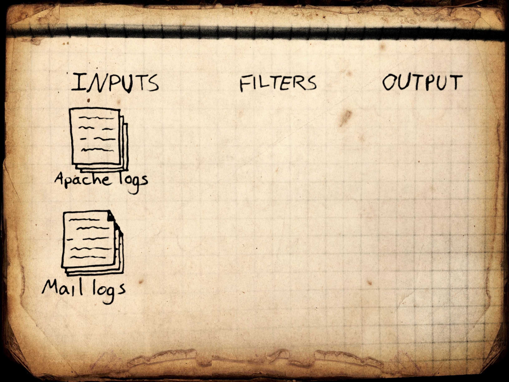
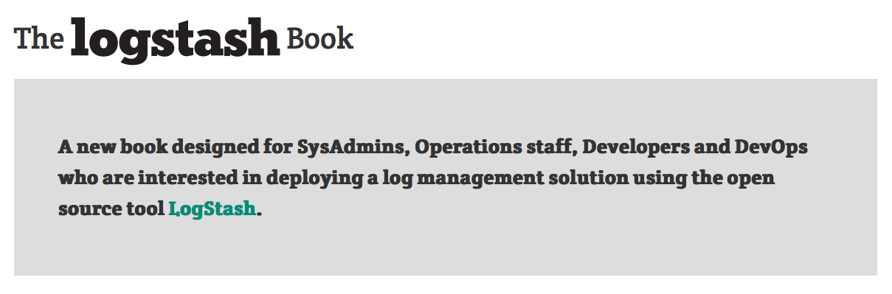

logstash
Jordan Sissel
logger @ DreamHost

rm -rf all the logs
108.166.15.188 - - [13/Sep/2012:02:34:22 -0400] "GET /files/logstash/logstash-1.1.0-monolithic.jar HTTP/1.1" 200 40923996 "-" "Chef Client/0.10.8 (ruby-1.9.3-p0; ohai-0.6.10; x86_64-linux; +http://opscode.com)"
50.56.197.244 - - [13/Sep/2012:02:34:37 -0400] "GET / HTTP/1.1" 200 41687 "-" "Mozilla/4.0 (compatible; MSIE 5.0; Windows NT; DigExt; DTS Agent"
89.96.171.210 - - [13/Sep/2012:02:32:49 -0400] "GET /files/logstash/logstash-1.1.0-monolithic.jar HTTP/1.1" 200 40923996 "-" "Chef Client/0.10.10 (ruby-1.9.3-p194; ohai-0.6.4; amd64-freebsd8; +http://opscode.com)"
37.57.128.238 - - [13/Sep/2012:02:37:24 -0400] "GET / HTTP/1.1" 200 41687 "-" "Mozilla/4.0 (compatible; MSIE 5.0; Windows NT; DigExt; DTS Agent"
199.21.99.109 - - [13/Sep/2012:02:38:12 -0400] "GET /blog/tags/packaging HTTP/1.1" 200 15152 "-" "Mozilla/5.0 (compatible; YandexBot/3.0; +http://yandex.com/bots)"
180.76.6.232 - - [13/Sep/2012:02:38:23 -0400] "GET /blog/tags/wrt54gl HTTP/1.1" 200 8867 "-" "Mozilla/5.0 (compatible; Baiduspider/2.0; +http://www.baidu.com/search/spider.html)"
217.227.233.68 - - [13/Sep/2012:02:38:25 -0400] "GET /articles/ssh-security/ HTTP/1.1" 200 16543 "-" "Mozilla/5.0 (X11; Linux x86_64; rv:15.0) Gecko/20100101 Firefox/15.0"
217.227.233.68 - - [13/Sep/2012:02:38:26 -0400] "GET /reset.css HTTP/1.1" 200 1015 "http://www.semicomplete.com/articles/ssh-security/" "Mozilla/5.0 (X11; Linux x86_64; rv:15.0) Gecko/20100101 Firefox/15.0"
217.227.233.68 - - [13/Sep/2012:02:38:26 -0400] "GET /style2.css HTTP/1.1" 200 4877 "http://www.semicomplete.com/articles/ssh-security/" "Mozilla/5.0 (X11; Linux x86_64; rv:15.0) Gecko/20100101 Firefox/15.0"
217.227.233.68 - - [13/Sep/2012:02:38:26 -0400] "GET /images/jordan-80.png HTTP/1.1" 200 6146 "http://www.semicomplete.com/articles/ssh-security/" "Mozilla/5.0 (X11; Linux x86_64; rv:15.0) Gecko/20100101 Firefox/15.0"
217.227.233.68 - - [13/Sep/2012:02:38:31 -0400] "GET /images/web/2009/banner.png HTTP/1.1" 200 52315 "http://www.semicomplete.com/style2.css" "Mozilla/5.0 (X11; Linux x86_64; rv:15.0) Gecko/20100101 Firefox/15.0"
184.73.137.50 - - [13/Sep/2012:02:38:28 -0400] "GET /files/logstash/logstash-1.1.1-monolithic.jar HTTP/1.1" 200 53813805 "-" "Chef Client/0.10.8 (ruby-1.8.7-p334; ohai-0.6.10; i686-linux; +http://opscode.com)"
24.24.235.59 - - [13/Sep/2012:02:38:46 -0400] "GET /kibana/ HTTP/1.1" 200 4483 "http://news.ycombinator.com/item?id=4417660" "Mozilla/5.0 (Windows NT 6.1; WOW64) AppleWebKit/537.1 (KHTML, like Gecko) Chrome/21.0.1180.89 Safari/537.1"
24.24.235.59 - - [13/Sep/2012:02:38:46 -0400] "GET /kibana/bootstrap/css/bootstrap-responsive.min.css HTTP/1.1" 200 7680 "http://semicomplete.com/kibana/" "Mozilla/5.0 (Windows NT 6.1; WOW64) AppleWebKit/537.1 (KHTML, like Gecko) Chrome/21.0.1180.89 Safari/537.1"
24.24.235.59 - - [13/Sep/2012:02:38:46 -0400] "GET /kibana/css/style.css HTTP/1.1" 200 2715 "http://semicomplete.com/kibana/" "Mozilla/5.0 (Windows NT 6.1; WOW64) AppleWebKit/537.1 (KHTML, like Gecko) Chrome/21.0.1180.89 Safari/537.1"
24.24.235.59 - - [13/Sep/2012:02:38:46 -0400] "GET /kibana/css/jquery.ui.datepicker.css HTTP/1.1" 200 33035 "http://semicomplete.com/kibana/" "Mozilla/5.0 (Windows NT 6.1; WOW64) AppleWebKit/537.1 (KHTML, like Gecko) Chrome/21.0.1180.89 Safari/537.1"
24.24.235.59 - - [13/Sep/2012:02:38:46 -0400] "GET /kibana/js/lib/excanvas.min.js HTTP/1.1" 200 19415 "http://semicomplete.com/kibana/" "Mozilla/5.0 (Windows NT 6.1; WOW64) AppleWebKit/537.1 (KHTML, like Gecko) Chrome/21.0.1180.89 Safari/537.1"
24.24.235.59 - - [13/Sep/2012:02:38:46 -0400] "GET /kibana/bootstrap/css/bootstrap.min.css HTTP/1.1" 200 71463 "http://semicomplete.com/kibana/" "Mozilla/5.0 (Windows NT 6.1; WOW64) AppleWebKit/537.1 (KHTML, like Gecko) Chrome/21.0.1180.89 Safari/537.1"
24.24.235.59 - - [13/Sep/2012:02:38:46 -0400] "GET /kibana/js/lib/jquery.history.js HTTP/1.1" 200 6466 "http://semicomplete.com/kibana/" "Mozilla/5.0 (Windows NT 6.1; WOW64) AppleWebKit/537.1 (KHTML, like Gecko) Chrome/21.0.1180.89 Safari/537.1"
24.24.235.59 - - [13/Sep/2012:02:38:46 -0400] "GET /kibana/css/jquery-ui-1.8.16.custom.css HTTP/1.1" 200 50829 "http://semicomplete.com/kibana/" "Mozilla/5.0 (Windows NT 6.1; WOW64) AppleWebKit/537.1 (KHTML, like Gecko) Chrome/21.0.1180.89 Safari/537.1"
24.24.235.59 - - [13/Sep/2012:02:38:46 -0400] "GET /kibana/js/lib/jquery.flot.min.js HTTP/1.1" 200 37554 "http://semicomplete.com/kibana/" "Mozilla/5.0 (Windows NT 6.1; WOW64) AppleWebKit/537.1 (KHTML, like Gecko) Chrome/21.0.1180.89 Safari/537.1"
24.24.235.59 - - [13/Sep/2012:02:38:46 -0400] "GET /kibana/js/lib/jquery.flot.selection.min.js HTTP/1.1" 200 3532 "http://semicomplete.com/kibana/" "Mozilla/5.0 (Windows NT 6.1; WOW64) AppleWebKit/537.1 (KHTML, like Gecko) Chrome/21.0.1180.89 Safari/537.1"
24.24.235.59 - - [13/Sep/2012:02:38:46 -0400] "GET /kibana/js/lib/jquery.smartresize.js HTTP/1.1" 200 1123 "http://semicomplete.com/kibana/" "Mozilla/5.0 (Windows NT 6.1; WOW64) AppleWebKit/537.1 (KHTML, like Gecko) Chrome/21.0.1180.89 Safari/537.1"
24.24.235.59 - - [13/Sep/2012:02:38:46 -0400] "GET /kibana/js/lib/iso8601.min.js HTTP/1.1" 200 486 "http://semicomplete.com/kibana/" "Mozilla/5.0 (Windows NT 6.1; WOW64) AppleWebKit/537.1 (KHTML, like Gecko) Chrome/21.0.1180.89 Safari/537.1"
24.24.235.59 - - [13/Sep/2012:02:38:46 -0400] "GET /kibana/js/lib/safebase64.js HTTP/1.1" 200 3264 "http://semicomplete.com/kibana/" "Mozilla/5.0 (Windows NT 6.1; WOW64) AppleWebKit/537.1 (KHTML, like Gecko) Chrome/21.0.1180.89 Safari/537.1"
24.24.235.59 - - [13/Sep/2012:02:38:46 -0400] "GET /kibana/js/lib/jquery.min.js HTTP/1.1" 200 93868 "http://semicomplete.com/kibana/" "Mozilla/5.0 (Windows NT 6.1; WOW64) AppleWebKit/537.1 (KHTML, like Gecko) Chrome/21.0.1180.89 Safari/537.1"
24.24.235.59 - - [13/Sep/2012:02:38:47 -0400] "GET /kibana/js/lib/json2.js HTTP/1.1" 200 17541 "http://semicomplete.com/kibana/" "Mozilla/5.0 (Windows NT 6.1; WOW64) AppleWebKit/537.1 (KHTML, like Gecko) Chrome/21.0.1180.89 Safari/537.1"
24.24.235.59 - - [13/Sep/2012:02:38:47 -0400] "GET /kibana/js/ajax.js HTTP/1.1" 200 37584 "http://semicomplete.com/kibana/" "Mozilla/5.0 (Windows NT 6.1; WOW64) AppleWebKit/537.1 (KHTML, like Gecko) Chrome/21.0.1180.89 Safari/537.1"
24.24.235.59 - - [13/Sep/2012:02:38:46 -0400] "GET /kibana/js/lib/jquery-ui-timepicker-addon.js HTTP/1.1" 200 50902 "http://semicomplete.com/kibana/" "Mozilla/5.0 (Windows NT 6.1; WOW64) AppleWebKit/537.1 (KHTML, like Gecko) Chrome/21.0.1180.89 Safari/537.1"
24.24.235.59 - - [13/Sep/2012:02:38:46 -0400] "GET /kibana/js/lib/jquery.ui.datepicker.js HTTP/1.1" 200 76332 "http://semicomplete.com/kibana/" "Mozilla/5.0 (Windows NT 6.1; WOW64) AppleWebKit/537.1 (KHTML, like Gecko) Chrome/21.0.1180.89 Safari/537.1"
24.24.235.59 - - [13/Sep/2012:02:38:47 -0400] "GET /kibana/bootstrap/js/bootstrap-dropdown.js HTTP/1.1" 200 2558 "http://semicomplete.com/kibana/" "Mozilla/5.0 (Windows NT 6.1; WOW64) AppleWebKit/537.1 (KHTML, like Gecko) Chrome/21.0.1180.89 Safari/537.1"
24.24.235.59 - - [13/Sep/2012:02:38:47 -0400] "GET /kibana/bootstrap/js/bootstrap.js HTTP/1.1" 200 47395 "http://semicomplete.com/kibana/" "Mozilla/5.0 (Windows NT 6.1; WOW64) AppleWebKit/537.1 (KHTML, like Gecko) Chrome/21.0.1180.89 Safari/537.1"
24.24.235.59 - - [13/Sep/2012:02:38:47 -0400] "GET /kibana/js/lib/jquery.ui.accordion.js HTTP/1.1" 200 16265 "http://semicomplete.com/kibana/" "Mozilla/5.0 (Windows NT 6.1; WOW64) AppleWebKit/537.1 (KHTML, like Gecko) Chrome/21.0.1180.89 Safari/537.1"
24.24.235.59 - - [13/Sep/2012:02:38:46 -0400] "GET /kibana/js/lib/jquery-ui-1.8.16.custom.min.js HTTP/1.1" 200 196695 "http://semicomplete.com/kibana/" "Mozilla/5.0 (Windows NT 6.1; WOW64) AppleWebKit/537.1 (KHTML, like Gecko) Chrome/21.0.1180.89 Safari/537.1"
24.24.235.59 - - [13/Sep/2012:02:38:47 -0400] "GET /kibana/loader2.php?page=eyJzZWFyY2giOiIiLCJmaWVsZHMiOlsiIl0sIm9mZnNldCI6MCwidGltZWZyYW1lIjoiNDggaG91cnMiLCJncmFwaG1vZGUiOiJjb3VudCIsInN0YW1wIjoxMzQ1NjQ3NjQ3ODU5fQ==&_=1347518472674 HTTP/1.1" 200 576 "http://semicomplete.com/kibana/" "Mozilla/5.0 (Windows NT 6.1; WOW64) AppleWebKit/537.1 (KHTML, like Gecko) Chrome/21.0.1180.89 Safari/537.1"
24.24.235.59 - - [13/Sep/2012:02:38:47 -0400] "GET /kibana/images/logo.png HTTP/1.1" 200 1051 "http://semicomplete.com/kibana/" "Mozilla/5.0 (Windows NT 6.1; WOW64) AppleWebKit/537.1 (KHTML, like Gecko) Chrome/21.0.1180.89 Safari/537.1"
24.24.235.59 - - [13/Sep/2012:02:38:47 -0400] "GET /kibana/css/images/ui-icons_222222_256x240.png HTTP/1.1" 200 4369 "http://semicomplete.com/kibana/" "Mozilla/5.0 (Windows NT 6.1; WOW64) AppleWebKit/537.1 (KHTML, like Gecko) Chrome/21.0.1180.89 Safari/537.1"
24.24.235.59 - - [13/Sep/2012:02:38:47 -0400] "GET /kibana/images/kibana_banner.png HTTP/1.1" 200 16930 "http://semicomplete.com/kibana/" "Mozilla/5.0 (Windows NT 6.1; WOW64) AppleWebKit/537.1 (KHTML, like Gecko) Chrome/21.0.1180.89 Safari/537.1"
24.24.235.59 - - [13/Sep/2012:02:38:47 -0400] "GET /kibana/images/feed.png HTTP/1.1" 200 689 "http://semicomplete.com/kibana/" "Mozilla/5.0 (Windows NT 6.1; WOW64) AppleWebKit/537.1 (KHTML, like Gecko) Chrome/21.0.1180.89 Safari/537.1"
24.24.235.59 - - [13/Sep/2012:02:38:47 -0400] "GET /kibana/images/csv.gif HTTP/1.1" 200 154 "http://semicomplete.com/kibana/" "Mozilla/5.0 (Windows NT 6.1; WOW64) AppleWebKit/537.1 (KHTML, like Gecko) Chrome/21.0.1180.89 Safari/537.1"
24.24.235.59 - - [13/Sep/2012:02:38:47 -0400] "GET /kibana/images/stream.png HTTP/1.1" 200 569 "http://semicomplete.com/kibana/" "Mozilla/5.0 (Windows NT 6.1; WOW64) AppleWebKit/537.1 (KHTML, like Gecko) Chrome/21.0.1180.89 Safari/537.1"
24.24.235.59 - - [13/Sep/2012:02:38:47 -0400] "GET /kibana/images/ajax-loader.gif HTTP/1.1" 200 723 "http://semicomplete.com/kibana/" "Mozilla/5.0 (Windows NT 6.1; WOW64) AppleWebKit/537.1 (KHTML, like Gecko) Chrome/21.0.1180.89 Safari/537.1"
24.24.235.59 - - [13/Sep/2012:02:38:47 -0400] "GET /kibana/favicon.ico HTTP/1.1" 200 4286 "-" "Mozilla/5.0 (Windows NT 6.1; WOW64) AppleWebKit/537.1 (KHTML, like Gecko) Chrome/21.0.1180.89 Safari/537.1"
24.24.235.59 - - [13/Sep/2012:02:38:55 -0400] "GET /kibana/loader2.php?page=eyJzZWFyY2giOiIiLCJmaWVsZHMiOlsiIl0sIm9mZnNldCI6MCwidGltZWZyYW1lIjoiYWxsIiwiZ3JhcGhtb2RlIjoiY291bnQiLCJzdGFtcCI6MTM0NzUxODQ4MDExOX0=&_=1347518480123 HTTP/1.1" 200 580 "http://semicomplete.com/kibana/" "Mozilla/5.0 (Windows NT 6.1; WOW64) AppleWebKit/537.1 (KHTML, like Gecko) Chrome/21.0.1180.89 Safari/537.1"
24.24.235.59 - - [13/Sep/2012:02:38:56 -0400] "GET /kibana/loader2.php?page=eyJzZWFyY2giOiIiLCJmaWVsZHMiOlsiIl0sIm9mZnNldCI6MCwidGltZWZyYW1lIjoiNDggaG91cnMiLCJncmFwaG1vZGUiOiJjb3VudCIsInN0YW1wIjoxMzQ1NjQ3NjQ3ODU5fQ==&_=1347518481745 HTTP/1.1" 200 576 "http://semicomplete.com/kibana/" "Mozilla/5.0 (Windows NT 6.1; WOW64) AppleWebKit/537.1 (KHTML, like Gecko) Chrome/21.0.1180.89 Safari/537.1"
50.19.56.78 - - [13/Sep/2012:02:38:54 -0400] "GET /files/logstash/logstash-1.1.1-monolithic.jar HTTP/1.1" 200 53813805 "-" "Chef Client/0.10.8 (ruby-1.8.7-p334; ohai-0.6.12; i686-linux; +http://opscode.com)"
178.1.226.1 - - [13/Sep/2012:02:39:23 -0400] "GET /favicon.ico HTTP/1.1" 200 3638 "-" "Mozilla/5.0 (X11; Ubuntu; Linux x86_64; rv:15.0) Gecko/20100101 Firefox/15.0.1"
108.166.15.188 - - [13/Sep/2012:02:40:07 -0400] "GET /files/logstash/logstash-1.1.0-monolithic.jar HTTP/1.1" 200 40923996 "-" "Chef Client/0.10.8 (ruby-1.9.3-p0; ohai-0.6.10; x86_64-linux; +http://opscode.com)"
74.125.183.29 - - [13/Sep/2012:02:40:15 -0400] "GET /?flav=rss20 HTTP/1.1" 200 32996 "-" "FeedBurner/1.0 (http://www.FeedBurner.com)"
178.77.103.6 - - [13/Sep/2012:02:40:16 -0400] "GET /blog HTTP/1.1" 200 41691 "-" "Tiny Tiny RSS/1.5.5 (http://tt-rss.org/)"
174.37.213.34 - - [13/Sep/2012:02:40:48 -0400] "GET /blog HTTP/1.1" 200 41691 "-" "Mozilla/5.0 (X11; U; Linux x86_64; en-US; rv:1.9.0.19; aggregator:Spinn3r (Spinn3r 3.1); http://spinn3r.com/robot) Gecko/2010040121 Firefox/3.0.19"
50.16.86.251 - - [13/Sep/2012:02:40:51 -0400] "GET /files/logstash/logstash-1.1.1-monolithic.jar HTTP/1.1" 200 53813805 "-" "Chef Client/0.10.8 (ruby-1.8.7-p334; ohai-6.14.0; i686-linux; +http://opscode.com)"
108.166.15.188 - - [13/Sep/2012:02:34:22 -0400] "GET /files/logstash/logstash-1.1.0-monolithic.jar HTTP/1.1" 200 40923996 "-" "Chef Client/0.10.8 (ruby-1.9.3-p0; ohai-0.6.10; x86_64-linux; +http://opscode.com)"
50.56.197.244 - - [13/Sep/2012:02:34:37 -0400] "GET / HTTP/1.1" 200 41687 "-" "Mozilla/4.0 (compatible; MSIE 5.0; Windows NT; DigExt; DTS Agent"
89.96.171.210 - - [13/Sep/2012:02:32:49 -0400] "GET /files/logstash/logstash-1.1.0-monolithic.jar HTTP/1.1" 200 40923996 "-" "Chef Client/0.10.10 (ruby-1.9.3-p194; ohai-0.6.4; amd64-freebsd8; +http://opscode.com)"
37.57.128.238 - - [13/Sep/2012:02:37:24 -0400] "GET / HTTP/1.1" 200 41687 "-" "Mozilla/4.0 (compatible; MSIE 5.0; Windows NT; DigExt; DTS Agent"
199.21.99.109 - - [13/Sep/2012:02:38:12 -0400] "GET /blog/tags/packaging HTTP/1.1" 200 15152 "-" "Mozilla/5.0 (compatible; YandexBot/3.0; +http://yandex.com/bots)"
180.76.6.232 - - [13/Sep/2012:02:38:23 -0400] "GET /blog/tags/wrt54gl HTTP/1.1" 200 8867 "-" "Mozilla/5.0 (compatible; Baiduspider/2.0; +http://www.baidu.com/search/spider.html)"
217.227.233.68 - - [13/Sep/2012:02:38:25 -0400] "GET /articles/ssh-security/ HTTP/1.1" 200 16543 "-" "Mozilla/5.0 (X11; Linux x86_64; rv:15.0) Gecko/20100101 Firefox/15.0"
217.227.233.68 - - [13/Sep/2012:02:38:26 -0400] "GET /reset.css HTTP/1.1" 200 1015 "http://www.semicomplete.com/articles/ssh-security/" "Mozilla/5.0 (X11; Linux x86_64; rv:15.0) Gecko/20100101 Firefox/15.0"
217.227.233.68 - - [13/Sep/2012:02:38:26 -0400] "GET /style2.css HTTP/1.1" 200 4877 "http://www.semicomplete.com/articles/ssh-security/" "Mozilla/5.0 (X11; Linux x86_64; rv:15.0) Gecko/20100101 Firefox/15.0"
217.227.233.68 - - [13/Sep/2012:02:38:26 -0400] "GET /images/jordan-80.png HTTP/1.1" 200 6146 "http://www.semicomplete.com/articles/ssh-security/" "Mozilla/5.0 (X11; Linux x86_64; rv:15.0) Gecko/20100101 Firefox/15.0"
217.227.233.68 - - [13/Sep/2012:02:38:31 -0400] "GET /images/web/2009/banner.png HTTP/1.1" 200 52315 "http://www.semicomplete.com/style2.css" "Mozilla/5.0 (X11; Linux x86_64; rv:15.0) Gecko/20100101 Firefox/15.0"
184.73.137.50 - - [13/Sep/2012:02:38:28 -0400] "GET /files/logstash/logstash-1.1.1-monolithic.jar HTTP/1.1" 200 53813805 "-" "Chef Client/0.10.8 (ruby-1.8.7-p334; ohai-0.6.10; i686-linux; +http://opscode.com)"
24.24.235.59 - - [13/Sep/2012:02:38:46 -0400] "GET /kibana/ HTTP/1.1" 200 4483 "http://news.ycombinator.com/item?id=4417660" "Mozilla/5.0 (Windows NT 6.1; WOW64) AppleWebKit/537.1 (KHTML, like Gecko) Chrome/21.0.1180.89 Safari/537.1"
24.24.235.59 - - [13/Sep/2012:02:38:46 -0400] "GET /kibana/bootstrap/css/bootstrap-responsive.min.css HTTP/1.1" 200 7680 "http://semicomplete.com/kibana/" "Mozilla/5.0 (Windows NT 6.1; WOW64) AppleWebKit/537.1 (KHTML, like Gecko) Chrome/21.0.1180.89 Safari/537.1"
24.24.235.59 - - [13/Sep/2012:02:38:46 -0400] "GET /kibana/css/style.css HTTP/1.1" 200 2715 "http://semicomplete.com/kibana/" "Mozilla/5.0 (Windows NT 6.1; WOW64) AppleWebKit/537.1 (KHTML, like Gecko) Chrome/21.0.1180.89 Safari/537.1"
24.24.235.59 - - [13/Sep/2012:02:38:46 -0400] "GET /kibana/css/jquery.ui.datepicker.css HTTP/1.1" 200 33035 "http://semicomplete.com/kibana/" "Mozilla/5.0 (Windows NT 6.1; WOW64) AppleWebKit/537.1 (KHTML, like Gecko) Chrome/21.0.1180.89 Safari/537.1"
24.24.235.59 - - [13/Sep/2012:02:38:46 -0400] "GET /kibana/js/lib/excanvas.min.js HTTP/1.1" 200 19415 "http://semicomplete.com/kibana/" "Mozilla/5.0 (Windows NT 6.1; WOW64) AppleWebKit/537.1 (KHTML, like Gecko) Chrome/21.0.1180.89 Safari/537.1"
24.24.235.59 - - [13/Sep/2012:02:38:46 -0400] "GET /kibana/bootstrap/css/bootstrap.min.css HTTP/1.1" 200 71463 "http://semicomplete.com/kibana/" "Mozilla/5.0 (Windows NT 6.1; WOW64) AppleWebKit/537.1 (KHTML, like Gecko) Chrome/21.0.1180.89 Safari/537.1"
24.24.235.59 - - [13/Sep/2012:02:38:46 -0400] "GET /kibana/js/lib/jquery.history.js HTTP/1.1" 200 6466 "http://semicomplete.com/kibana/" "Mozilla/5.0 (Windows NT 6.1; WOW64) AppleWebKit/537.1 (KHTML, like Gecko) Chrome/21.0.1180.89 Safari/537.1"
24.24.235.59 - - [13/Sep/2012:02:38:46 -0400] "GET /kibana/css/jquery-ui-1.8.16.custom.css HTTP/1.1" 200 50829 "http://semicomplete.com/kibana/" "Mozilla/5.0 (Windows NT 6.1; WOW64) AppleWebKit/537.1 (KHTML, like Gecko) Chrome/21.0.1180.89 Safari/537.1"
24.24.235.59 - - [13/Sep/2012:02:38:46 -0400] "GET /kibana/js/lib/jquery.flot.min.js HTTP/1.1" 200 37554 "http://semicomplete.com/kibana/" "Mozilla/5.0 (Windows NT 6.1; WOW64) AppleWebKit/537.1 (KHTML, like Gecko) Chrome/21.0.1180.89 Safari/537.1"
24.24.235.59 - - [13/Sep/2012:02:38:46 -0400] "GET /kibana/js/lib/jquery.flot.selection.min.js HTTP/1.1" 200 3532 "http://semicomplete.com/kibana/" "Mozilla/5.0 (Windows NT 6.1; WOW64) AppleWebKit/537.1 (KHTML, like Gecko) Chrome/21.0.1180.89 Safari/537.1"
24.24.235.59 - - [13/Sep/2012:02:38:46 -0400] "GET /kibana/js/lib/jquery.smartresize.js HTTP/1.1" 200 1123 "http://semicomplete.com/kibana/" "Mozilla/5.0 (Windows NT 6.1; WOW64) AppleWebKit/537.1 (KHTML, like Gecko) Chrome/21.0.1180.89 Safari/537.1"
24.24.235.59 - - [13/Sep/2012:02:38:46 -0400] "GET /kibana/js/lib/iso8601.min.js HTTP/1.1" 200 486 "http://semicomplete.com/kibana/" "Mozilla/5.0 (Windows NT 6.1; WOW64) AppleWebKit/537.1 (KHTML, like Gecko) Chrome/21.0.1180.89 Safari/537.1"
24.24.235.59 - - [13/Sep/2012:02:38:46 -0400] "GET /kibana/js/lib/safebase64.js HTTP/1.1" 200 3264 "http://semicomplete.com/kibana/" "Mozilla/5.0 (Windows NT 6.1; WOW64) AppleWebKit/537.1 (KHTML, like Gecko) Chrome/21.0.1180.89 Safari/537.1"
24.24.235.59 - - [13/Sep/2012:02:38:46 -0400] "GET /kibana/js/lib/jquery.min.js HTTP/1.1" 200 93868 "http://semicomplete.com/kibana/" "Mozilla/5.0 (Windows NT 6.1; WOW64) AppleWebKit/537.1 (KHTML, like Gecko) Chrome/21.0.1180.89 Safari/537.1"
24.24.235.59 - - [13/Sep/2012:02:38:47 -0400] "GET /kibana/js/lib/json2.js HTTP/1.1" 200 17541 "http://semicomplete.com/kibana/" "Mozilla/5.0 (Windows NT 6.1; WOW64) AppleWebKit/537.1 (KHTML, like Gecko) Chrome/21.0.1180.89 Safari/537.1"
24.24.235.59 - - [13/Sep/2012:02:38:47 -0400] "GET /kibana/js/ajax.js HTTP/1.1" 200 37584 "http://semicomplete.com/kibana/" "Mozilla/5.0 (Windows NT 6.1; WOW64) AppleWebKit/537.1 (KHTML, like Gecko) Chrome/21.0.1180.89 Safari/537.1"
24.24.235.59 - - [13/Sep/2012:02:38:46 -0400] "GET /kibana/js/lib/jquery-ui-timepicker-addon.js HTTP/1.1" 200 50902 "http://semicomplete.com/kibana/" "Mozilla/5.0 (Windows NT 6.1; WOW64) AppleWebKit/537.1 (KHTML, like Gecko) Chrome/21.0.1180.89 Safari/537.1"
24.24.235.59 - - [13/Sep/2012:02:38:46 -0400] "GET /kibana/js/lib/jquery.ui.datepicker.js HTTP/1.1" 200 76332 "http://semicomplete.com/kibana/" "Mozilla/5.0 (Windows NT 6.1; WOW64) AppleWebKit/537.1 (KHTML, like Gecko) Chrome/21.0.1180.89 Safari/537.1"
24.24.235.59 - - [13/Sep/2012:02:38:47 -0400] "GET /kibana/bootstrap/js/bootstrap-dropdown.js HTTP/1.1" 200 2558 "http://semicomplete.com/kibana/" "Mozilla/5.0 (Windows NT 6.1; WOW64) AppleWebKit/537.1 (KHTML, like Gecko) Chrome/21.0.1180.89 Safari/537.1"
24.24.235.59 - - [13/Sep/2012:02:38:47 -0400] "GET /kibana/bootstrap/js/bootstrap.js HTTP/1.1" 200 47395 "http://semicomplete.com/kibana/" "Mozilla/5.0 (Windows NT 6.1; WOW64) AppleWebKit/537.1 (KHTML, like Gecko) Chrome/21.0.1180.89 Safari/537.1"
24.24.235.59 - - [13/Sep/2012:02:38:47 -0400] "GET /kibana/js/lib/jquery.ui.accordion.js HTTP/1.1" 200 16265 "http://semicomplete.com/kibana/" "Mozilla/5.0 (Windows NT 6.1; WOW64) AppleWebKit/537.1 (KHTML, like Gecko) Chrome/21.0.1180.89 Safari/537.1"
24.24.235.59 - - [13/Sep/2012:02:38:46 -0400] "GET /kibana/js/lib/jquery-ui-1.8.16.custom.min.js HTTP/1.1" 200 196695 "http://semicomplete.com/kibana/" "Mozilla/5.0 (Windows NT 6.1; WOW64) AppleWebKit/537.1 (KHTML, like Gecko) Chrome/21.0.1180.89 Safari/537.1"
24.24.235.59 - - [13/Sep/2012:02:38:47 -0400] "GET /kibana/loader2.php?page=eyJzZWFyY2giOiIiLCJmaWVsZHMiOlsiIl0sIm9mZnNldCI6MCwidGltZWZyYW1lIjoiNDggaG91cnMiLCJncmFwaG1vZGUiOiJjb3VudCIsInN0YW1wIjoxMzQ1NjQ3NjQ3ODU5fQ==&_=1347518472674 HTTP/1.1" 200 576 "http://semicomplete.com/kibana/" "Mozilla/5.0 (Windows NT 6.1; WOW64) AppleWebKit/537.1 (KHTML, like Gecko) Chrome/21.0.1180.89 Safari/537.1"
24.24.235.59 - - [13/Sep/2012:02:38:47 -0400] "GET /kibana/images/logo.png HTTP/1.1" 200 1051 "http://semicomplete.com/kibana/" "Mozilla/5.0 (Windows NT 6.1; WOW64) AppleWebKit/537.1 (KHTML, like Gecko) Chrome/21.0.1180.89 Safari/537.1"
24.24.235.59 - - [13/Sep/2012:02:38:47 -0400] "GET /kibana/css/images/ui-icons_222222_256x240.png HTTP/1.1" 200 4369 "http://semicomplete.com/kibana/" "Mozilla/5.0 (Windows NT 6.1; WOW64) AppleWebKit/537.1 (KHTML, like Gecko) Chrome/21.0.1180.89 Safari/537.1"
24.24.235.59 - - [13/Sep/2012:02:38:47 -0400] "GET /kibana/images/kibana_banner.png HTTP/1.1" 200 16930 "http://semicomplete.com/kibana/" "Mozilla/5.0 (Windows NT 6.1; WOW64) AppleWebKit/537.1 (KHTML, like Gecko) Chrome/21.0.1180.89 Safari/537.1"
24.24.235.59 - - [13/Sep/2012:02:38:47 -0400] "GET /kibana/images/feed.png HTTP/1.1" 200 689 "http://semicomplete.com/kibana/" "Mozilla/5.0 (Windows NT 6.1; WOW64) AppleWebKit/537.1 (KHTML, like Gecko) Chrome/21.0.1180.89 Safari/537.1"
24.24.235.59 - - [13/Sep/2012:02:38:47 -0400] "GET /kibana/images/csv.gif HTTP/1.1" 200 154 "http://semicomplete.com/kibana/" "Mozilla/5.0 (Windows NT 6.1; WOW64) AppleWebKit/537.1 (KHTML, like Gecko) Chrome/21.0.1180.89 Safari/537.1"
24.24.235.59 - - [13/Sep/2012:02:38:47 -0400] "GET /kibana/images/stream.png HTTP/1.1" 200 569 "http://semicomplete.com/kibana/" "Mozilla/5.0 (Windows NT 6.1; WOW64) AppleWebKit/537.1 (KHTML, like Gecko) Chrome/21.0.1180.89 Safari/537.1"
24.24.235.59 - - [13/Sep/2012:02:38:47 -0400] "GET /kibana/images/ajax-loader.gif HTTP/1.1" 200 723 "http://semicomplete.com/kibana/" "Mozilla/5.0 (Windows NT 6.1; WOW64) AppleWebKit/537.1 (KHTML, like Gecko) Chrome/21.0.1180.89 Safari/537.1"
24.24.235.59 - - [13/Sep/2012:02:38:47 -0400] "GET /kibana/favicon.ico HTTP/1.1" 200 4286 "-" "Mozilla/5.0 (Windows NT 6.1; WOW64) AppleWebKit/537.1 (KHTML, like Gecko) Chrome/21.0.1180.89 Safari/537.1"
24.24.235.59 - - [13/Sep/2012:02:38:55 -0400] "GET /kibana/loader2.php?page=eyJzZWFyY2giOiIiLCJmaWVsZHMiOlsiIl0sIm9mZnNldCI6MCwidGltZWZyYW1lIjoiYWxsIiwiZ3JhcGhtb2RlIjoiY291bnQiLCJzdGFtcCI6MTM0NzUxODQ4MDExOX0=&_=1347518480123 HTTP/1.1" 200 580 "http://semicomplete.com/kibana/" "Mozilla/5.0 (Windows NT 6.1; WOW64) AppleWebKit/537.1 (KHTML, like Gecko) Chrome/21.0.1180.89 Safari/537.1"
24.24.235.59 - - [13/Sep/2012:02:38:56 -0400] "GET /kibana/loader2.php?page=eyJzZWFyY2giOiIiLCJmaWVsZHMiOlsiIl0sIm9mZnNldCI6MCwidGltZWZyYW1lIjoiNDggaG91cnMiLCJncmFwaG1vZGUiOiJjb3VudCIsInN0YW1wIjoxMzQ1NjQ3NjQ3ODU5fQ==&_=1347518481745 HTTP/1.1" 200 576 "http://semicomplete.com/kibana/" "Mozilla/5.0 (Windows NT 6.1; WOW64) AppleWebKit/537.1 (KHTML, like Gecko) Chrome/21.0.1180.89 Safari/537.1"
50.19.56.78 - - [13/Sep/2012:02:38:54 -0400] "GET /files/logstash/logstash-1.1.1-monolithic.jar HTTP/1.1" 200 53813805 "-" "Chef Client/0.10.8 (ruby-1.8.7-p334; ohai-0.6.12; i686-linux; +http://opscode.com)"
178.1.226.1 - - [13/Sep/2012:02:39:23 -0400] "GET /favicon.ico HTTP/1.1" 200 3638 "-" "Mozilla/5.0 (X11; Ubuntu; Linux x86_64; rv:15.0) Gecko/20100101 Firefox/15.0.1"
108.166.15.188 - - [13/Sep/2012:02:40:07 -0400] "GET /files/logstash/logstash-1.1.0-monolithic.jar HTTP/1.1" 200 40923996 "-" "Chef Client/0.10.8 (ruby-1.9.3-p0; ohai-0.6.10; x86_64-linux; +http://opscode.com)"
74.125.183.29 - - [13/Sep/2012:02:40:15 -0400] "GET /?flav=rss20 HTTP/1.1" 200 32996 "-" "FeedBurner/1.0 (http://www.FeedBurner.com)"
178.77.103.6 - - [13/Sep/2012:02:40:16 -0400] "GET /blog HTTP/1.1" 200 41691 "-" "Tiny Tiny RSS/1.5.5 (http://tt-rss.org/)"
174.37.213.34 - - [13/Sep/2012:02:40:48 -0400] "GET /blog HTTP/1.1" 200 41691 "-" "Mozilla/5.0 (X11; U; Linux x86_64; en-US; rv:1.9.0.19; aggregator:Spinn3r (Spinn3r 3.1); http://spinn3r.com/robot) Gecko/2010040121 Firefox/3.0.19"
50.16.86.251 - - [13/Sep/2012:02:40:51 -0400] "GET /files/logstash/logstash-1.1.1-monolithic.jar HTTP/1.1" 200 53813805 "-" "Chef Client/0.10.8 (ruby-1.8.7-p334; ohai-6.14.0; i686-linux; +http://opscode.com)"
GIMME A GRAPH OF THAT


do this every day?
☹
don't be a human keyboard.case study:
email at DreamHost
Help! I'm not getting my mail!
- A DreamHost Customer
A DreamHost Core Value
Provide Superhero Service: DreamHost strives to max out the value and customer service we put into everything we do.- The DreamHost Way
Situation
- Customer is having email problems,
- and Customers having email problems is bad,
- Logs are necessary for diagnosis,
- so Technical Support needs access,
- but Operations has access,
- and InfoSec policies restrict certain access.
Old Solution
% ssh-and-grep-some-stuff.pl user@example.com
Loading
... is it actually doing anything?

Empower People: By empowering our employees to be truly helpful, we empower our customers with products and services they need to do their business.- The DreamHost Way
How much improved?
Technical Support Says
by an order of awesome
10000000000%
So, about logstash.
how can it help you?
- powerful and flexible log processing
- excellent search/analytics
- integrates well with your infrastructure
- helpful and friendly community
- free and open source
Basics
- unix: pipe text
ps -ef | awk '/firefox/ {print $2}' | xargs kill - powershell: pipe objects
ps | select { $_.Name == "firefox" } | kill - logstash is a pipe for events
- an event is a timestamp and some data

?
understanding logs with grok
Sample event
24.22.31.135 - - [22/Feb/2013:15:19:47 -0500] "GET /blog/geekery/xvfb-firefox.html HTTP/1.1" 200 10975 "-" "Screaming Frog SEO Spider/2.10"Break it down -
24.22.31.135
[22/Feb/2013:15:19:47 -0500]
GET
/blog/geekery/xvfb-firefox.html
HTTP/1.1
200
10975
-
Screaming Frog SEO Spider/2.10ip: 24.22.31.135
timestamp: [22/Feb/2013:15:19:47 -0500]
verb: GET
path: /blog/geekery/xvfb-firefox.html
protocol: HTTP/1.1
response code: 200
bytes sent: 10975
referrer: -
user agent: Screaming Frog SEO Spider/2.10| 1304060505 | 22/Feb/2013:15:19:47 -0500 |
| Fri, 21 Nov 1997 09:55:06 -0600 | Oct 11 20:21:47 |
| 020805 13:51:24 | 110429.071055,118 |
| @4000000037c219bf2ef02e94 |
| city | Portland |
| country | United States |
| latitude | 45.50729999999999 |
| longitude | -122.69319999999999 |

?
maybe you want to search?
maybe you want a graph?

?
?

first principles
If a newbie has a bad time,
it is a bug.
first principles
make it possible,
make it correct,
make it fast.
first principles
Open Source (Apache 2.0)
first principles
Should be easy to integrate.
inputs: network
| gemfire | irc |
| lumberjack | rabbimq |
| redis | relp |
| stomp | syslog |
| tcp and udp | websockets |
| xmpp | zeromq |
filters: grok
37.57.128.238 - - [13/Sep/2012:02:37:24 -0400] "GET / HTTP/1.1" 200 41687 ( client ip ) ( some timestamp thing ) (http request) rsp bytes
becomes :
## filters: improve event data
* geoip lookups
* user agent parsing
* syslog decoding
* dns lookups
* zeromq call outs
## filters: modify events
* mutate
* anonymize
* translate
## outputs
* where events go
* 46 outputs today
## outputs: metrics
* boundary
* circonus
* cloudwatch
* datadog
* ganglia
* graphite
* librato
* opentsdb
* riemann
## outputs: storage
* elasticsearch
* file
* mongodb
* redis
* riak
## outputs: monitor & report
* nagios
* email
* pagerduty
* zabbix
* irc
## about the project
## community
* irc: #logstash on freenode
* mail: logstash-users@googlegroups.com
* extra goodness: kibana, logstash-cli, puppet modules, chef cookbooks
## cookbook.logstash.net
* community site for sharing configs, log recipes, etc

## the logstash book
* why use logstash?
* how to get started?
* how to scale?
* how to extend?
* $10 ebook
## project metrics
* 18000 unique monthly visitors to logstash.net
* 730 users on logstash-users@googlegroups.com
* 540 users on logstash.jira.com
* 275 folks in #logstash on freenode IRC
* 130 code contributors
* 100+ plugins (inputs, filters, outputs)
{
"client": "37.57.128.238",
"timestamp": "13/Sep/2012:02:37:24 -0400",
"verb": "GET",
"request": "/",
"http_version": "1.1",
"response": 200,
"bytes": 41687,
}filters: date
| 13/Sep/2012:02:37:24 -0400 | 2012-09-13T06:37:24.000Z |
| 1361667592.342 | 2013-02-24T00:59:52.342Z |
| @4000000037c219bf2ef02e94 | 1999-08-24T04:04:05.787Z |
| 020805 13:51:24 | 2002-08-05T20:51:24.000Z |
filters: complex parsing
- key=value things="like this"
- { "json": "parsing" }
- <xml parsing="true" />
- csv,parsing,enabled
- also=have&url=parsing
- multi-
line
events